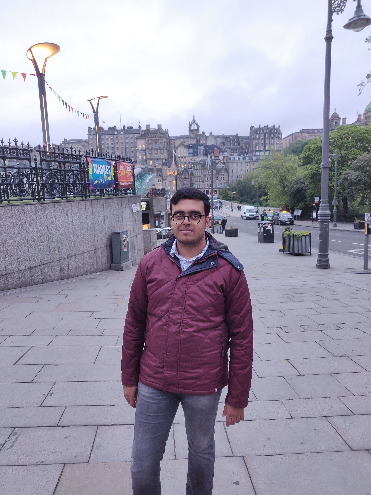

About Me
Hello! I am Shrenik Ganguli, currently pursuing an M.Tech in Computer Science & Engineering at IIT Hyderabad. I am passionate about Machine Learning, Data Science, and Software Development.
I have a strong academic background with a Bachelor's in Electronics & Telecommunication Engineering from Mumbai University, and have worked on various projects in areas such as AI, computer vision, and large language models (LLMs).
Technical Skills
- Languages: C, C++, Python, R, JAVA, JavaScript, HTML, CSS, SQL
- Frameworks/Libraries: TensorFlow, Keras, React.js, Node.js, Django, Flask, PyTorch
- Databases: MySQL, PostgreSQL, SQLite, MongoDB
- Cloud Platforms: Google Cloud Platform, Microsoft Azure
- Machine Learning Models: CNN, YOLO, RNN, LSTM, BERT, ResNet, GPT-2/3/4
Projects
- LLM-based Travel Planner: Developed a travel planning tool using large language models.
- Intracranial Hemorrhage Detection: Automated detection of hemorrhages using deep learning.
- Fraud Detection in Mobile Ads: Built a machine learning model to detect fraudulent mobile ads.
- Automated Visual Fruit Detection: Used YOLO to detect fruits in real-time.
- Image Caption Generator: Created a tool to generate captions for images using CNN and LSTM.
Contact
You can reach out to me via the following channels: